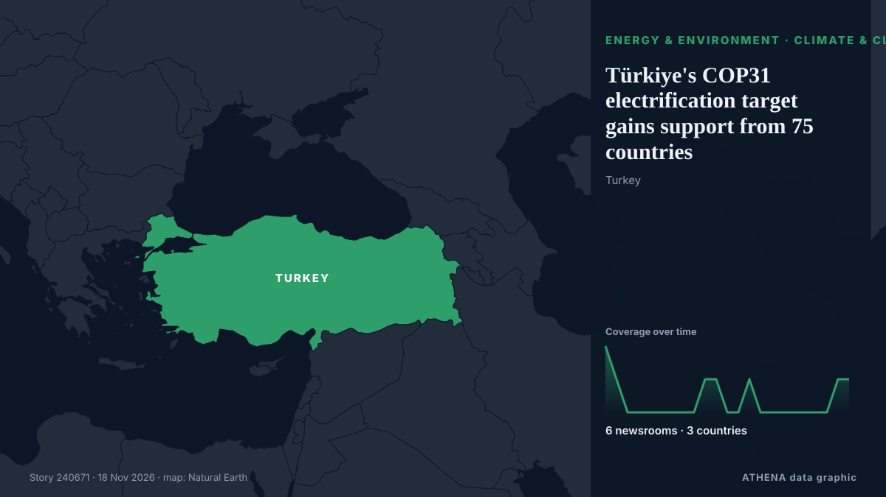

Climate & climate policy
SponsoredPresented by  Cybernetics and Artificial Intelligence Lab Welcome to the Cybernetics and Artificial Intelligence Laboratory, established at the Department of Business Administration of the National and Kapodistrian University of Athens. The lab is headed by Professor Dimitrios Thomakos. The lab aims to do research that can be published in top venues. Our research uses tools and methods of Artificial Intelligence, and lies in the following areas: - Forecasting - Decision making - Cyber security - Finance We are always looking forward to collaborating with exceptional students!
Cybernetics and Artificial Intelligence Lab Welcome to the Cybernetics and Artificial Intelligence Laboratory, established at the Department of Business Administration of the National and Kapodistrian University of Athens. The lab is headed by Professor Dimitrios Thomakos. The lab aims to do research that can be published in top venues. Our research uses tools and methods of Artificial Intelligence, and lies in the following areas: - Forecasting - Decision making - Cyber security - Finance We are always looking forward to collaborating with exceptional students!
| 5 Nov | 0 |
|---|---|
| 6 Nov | 0 |
| 7 Nov | 1 |
| 8 Nov | 1 |
| 9 Nov | 1 |
| 10 Nov | 0 |
| 11 Nov | 3 |
| 12 Nov | 1 |
| 13 Nov | 0 |
| 14 Nov | 2 |
| 15 Nov | 3 |
| 16 Nov | 8 |
| 17 Nov | 4 |
| 18 Nov | 0 |

Türkiye's COP31 electrification target gains support from 75 countries
The COP31 climate summit may end later this week without a pledge to boost electrification as major developing countries have signaled they would not support a firm commitment, anonymous sources with… from OilPrice.com
PACNEWS TWO, 18 NOVEMBER 2026
In this bulletin: 1. PACIFIC — Pacific-backed fossil fuel transition langugae must survive COP31: Bowen2. from Islands Business (Fiji)
Electric construction machinery cuts CO₂ emissions by up to 87%: Study
Current CO₂ emissions covered by the EU Emissions Trading System (EU-ETS1) could be substantially reduced by 2040. from Phys.org
US flexes climate action muscle at COP31 despite Trump no-show
The US government is snubbing UN climate talks in Turkey. from DW English
Wildlife protection must be part of climate action, campaigners tell COP31
Conservationists on Tuesday urged countries at the COP31 climate summit to include wildlife protection in climate negotiations, saying wild animals play a key role in maintaining carbon-storing… from Turkish Minute
Russia, Saudi Arabia and Australia named as biggest CO2 exporters in history
Analysis of fossil fuel exports since 1850 differs from most assessments – which look at countries where CO2 is released Russia, Saudi Arabia and Australia are the three biggest exporters of carbon… from The Guardian
UK Pushes for Global Levies on Polluting Industries
The UK is leading a drive to have countries consider small levies on polluting industries globally to raise funding for climate initiatives in developing countries, which are the worst affected by… from OilPrice.com
COP31 draft deal calls for ‘accelerated action’ to exit fossil fuels
Draft urges countries to raise electricity's share of final energy demand to 35% by 2035. from Express Tribune
UN climate chief warns of AI 'double-edged sword' at COP31
ANTALYA, Turkey (AFP) -- The UN's climate chief highlighted the "great potential and great peril" of artificial intelligence in the battle against global warming on Monday as COP31 host Turkey… from Korea Herald
Travlos criticises EU stance on shipping decarbonisation talks, warns of fresh IMO deadlock
The president of the Union of Greek Shipowners (UGS), Melina Travlos, has criticised the European Union’s approach to negotiations on shipping decarbonisation, warning of the risk of a fresh… from Naftemporiki (English)
Absent officially, unofficially ‘America is all in’ at COP31
ANTALYA, Turkey: The United States officially is absent from COP31. from Oman Observer
Cop31 draft text is attempt to ‘draw out parties’ to find agreement, president of talks says
Many countries surprised to see first version delivered with more than four days of negotiation remaining A draft text of a possible final outcome from the Cop31 UN climate summit is an attempt to… from Guardian Environment
Surge of US datacenters adds equivalent of Denmark’s annual emissions, study finds
‘Hyperscaler’ datacenters across country draw upon dirtier power sources to meet vast energy needs, research shows The frantic buildout of “hyperscaler” datacenters in the US has collectively caused… from Guardian Business
Port of Long Beach records lowest emissions per container
The Port of Long Beach’s 2025 emissions inventory shows emissions per container at an all-time low, even as terminals handled a record of nearly 9.9 million TEUs. from Container News
Presidential envoy expresses Korea's commitment to green transformation at COP31
Korea's presidential envoy to the UN climate summit has called for joint international efforts to tackle the climate crisis and expressed the country's commitment to a green transformation, the… from The Korea Times
Kiribati vice president Dr Teuea Toatu dies
Dr Teuea Toatu's passing was announced by Cabinet colleague Ruth Cross Kwansing on Sunday night. from RNZ National
Nations grapple with loss of 1.5C target at UN climate summit
The world has already warmed by about 1.4°C above pre-industrial levels, with the UN warning in September that breaching the Paris Agreement’s 1.5°C threshold was imminent and unavoidable. from Free Malaysia Today
Tricky trade-offs will show what Labor values most when we can’t have it all
From AI job losses to productivity and tackling climate change, public debate is awash right now with choices between incompatible goals. from Sydney Morning Herald
Singapore authorises first carbon project with Rwanda for international emissions offsetting
Through this, around 780,000 tonnes of CO2 equivalent is set to be mitigated between 2026 and 2030. from The Business Times